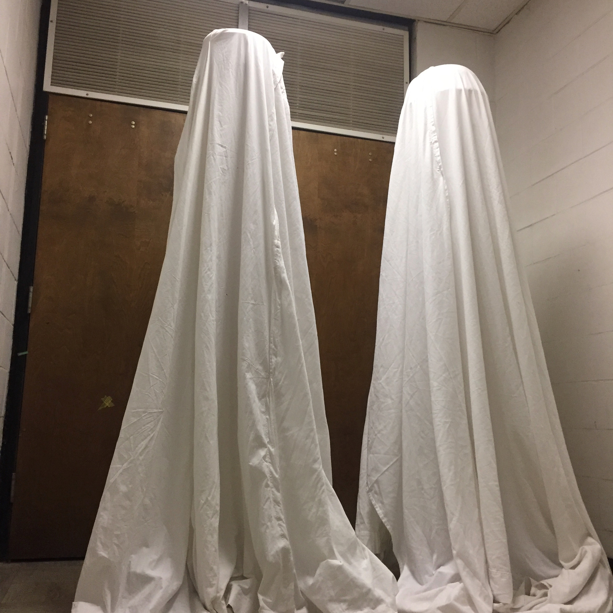

Just_Being_Nice
" id="port"> This piece attempts to convey how I feel at family gatherings where they say grace. The pressure to stand for the pledge of allegiance. To join family at church every Sunday. When Mormon missionary girls corner you and ask, “do you believe in god?” It speaks of an unquestioned majority. The feeling of wanting to be respectful but still being pulled right into the middle of a tradition that you don’t want to be a part of. The feeling of alienation while still being forced to participate. The feeling of fear, not wanting to upset people important to you. The imposing figures represent family, teachers, coaches, and missionaries. The people quietly forcing beliefs while you just respectfully follow along. This piece is based on a small card given out by Mormon campus missionaries. I was handed the card after two of them cornered me on campus and not before we had a pleasant but uncomfortable conversation.